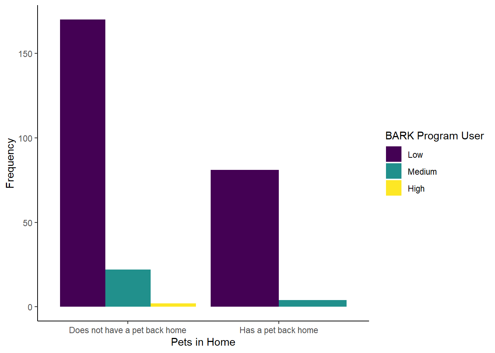
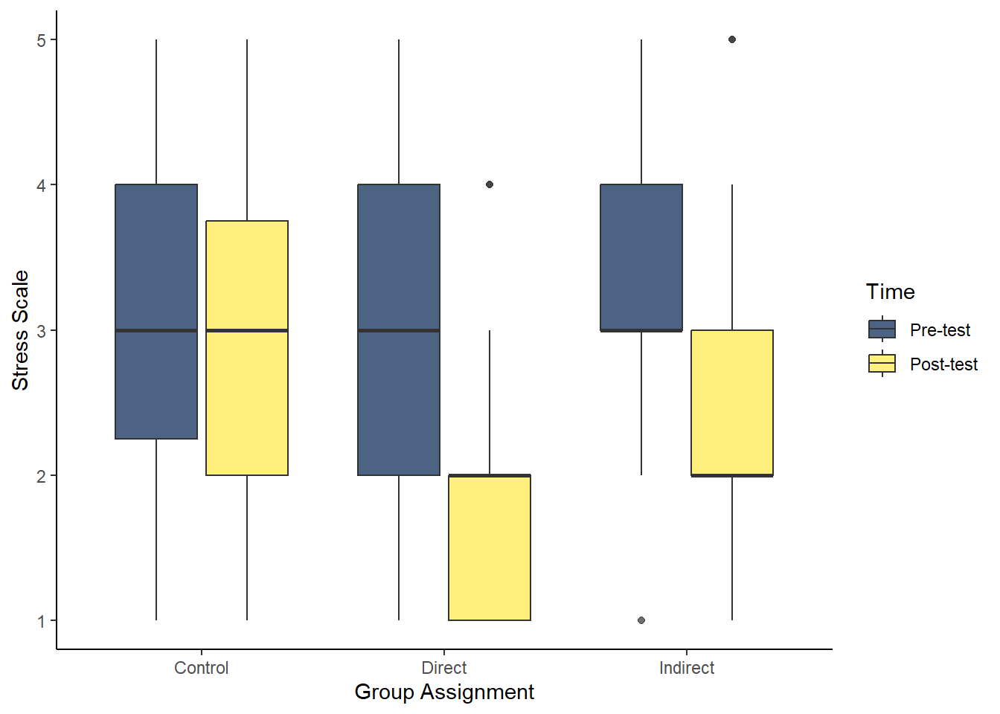
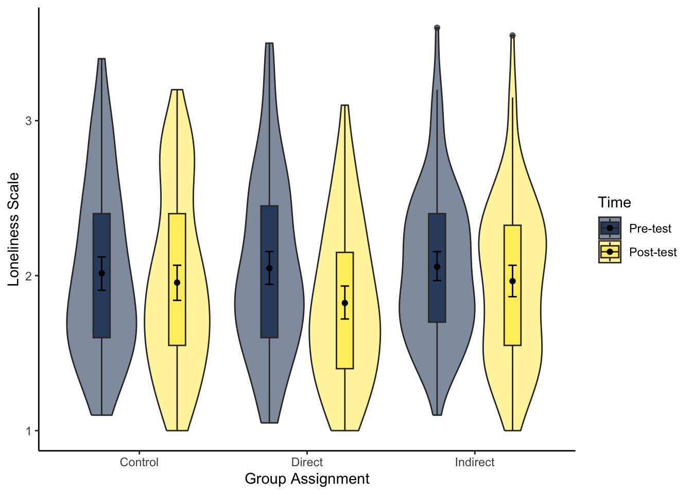

16 Analysis Journey 2: Simple Linear Regression
Welcome to the second data analysis journey. We have designed these chapters as a bridge between the structured learning in the core chapters and your assessments. We present you with a new data set, show you what the end product should look like, and see if you can apply your data wrangling, visualisation, and/or analysis skills to get there.
As you gain independence, this is the crucial skill. Data analysis is all about seeing the data you have available to you and identifying what the end product needs to be to apply your visualisation and analysis techniques. You can then mentally (or physically) create a checklist of tasks to work backwards to get there. There might be a lot of trial and error as you try one thing, it does not quite work, so you go back and try something else. If you get stuck though, we have a range of hints and task lists you can unhide, then the solution to check your attempts against.
In this second data analysis journey, we focus on inferential statistics after some data wrangling to apply all the skills you developed from Chapter 1 to Chapter 9.
16.1 Task preparation
16.1.1 Introduction to the data set
For this task, we are using open data from Binfet et al. (2022), where the authors used the data set to write a separate article on repurposing it for statistics education (Evans et al., 2023), inspiring us to use it in the chapter here. The abstract of their article is:
Researchers have claimed that canine-assisted interventions (CAIs) contribute significantly to bolstering participants’ wellbeing, yet the mechanisms within interactions have received little empirical attention. The aim of this study was to assess the impact of client–canine contact on wellbeing outcomes in a sample of 284 undergraduate college students (77% female; 21% male, 2% non-binary). Participants self-selected to participate and were randomly assigned to one of two canine interaction treatment conditions (touch or no touch) or to a handler-only condition with no therapy dog present. To assess self-reports of wellbeing, measures of flourishing, positive and negative affect, social connectedness, happiness, integration into the campus community, stress, homesickness, and loneliness were administered. Exploratory analyses were conducted to assess whether these wellbeing measures could be considered as measuring a unidimensional construct. This included both reliability analysis and exploratory factor analysis. Based on the results of these analyses we created a composite measure using participant scores on a latent factor. We then conducted the tests of the four hypotheses using these factor scores. Results indicate that participants across all conditions experienced enhanced wellbeing on several measures; however, only those in the direct contact condition reported significant improvements on all measures of wellbeing. Additionally, direct interactions with therapy dogs through touch elicited greater wellbeing benefits than did no touch/indirect interactions or interactions with only a dog handler. Similarly, analyses using scores on the wellbeing factor indicated significant improvement in wellbeing across all conditions (handler-only, d=0.18, p=0.041; indirect, d=0.38, p<0.001; direct, d=0.78, p<0.001), with more benefit when a dog was present (d=0.20, p<0.001), and the most benefit coming from physical contact with the dog (d=0.13, p=0.002). The findings hold implications for post-secondary wellbeing programs as well as the organization and delivery of CAIs.
In summary, they were interested in the effect of therapy dogs on well-being in undergraduate students. Participants were randomly allocated to one of three groups:
Canine interaction touching the dogs (Direct).
Canine interaction not touching the dogs (Indirect).
Handler-only with no dogs present (Control).
They measured 9 outcomes before and after the intervention including social connectedness, stress, and loneliness. For this journey chapter, we will focus on a constrained set of variables and analyses so it does not take forever, but the process would apply to all the outcomes. The authors posed three hypotheses which we will test after some data wrangling:
All treatment groups would have significantly higher measures of well-being and lower measures of ill-being after treatment.
The treatment groups that interact with dogs would have significantly higher measures of well-being and lower measures of ill-being compared to the handler-only treatment.
Direct contact with a therapy dog would yield greater benefits than indirect contact treatment.
16.1.2 Organising your files and project for the task
Before we can get started, you need to organise your files and project for the task, so your working directory is in order.
In your folder for research methods and the book
ResearchMethods1_2/Quant_Fundamentals, create a new folder for the data analysis journey calledJourney_02_regression. WithinJourney_02_regression, create two new folders calleddataandfigures.Create an R Project for
Journey_02_regressionas an existing directory for your chapter folder. This should now be your working directory.Create a new R Markdown document and give it a sensible title describing the chapter, such as
Analysis Journey 2 - Simple Linear Regression. Delete everything below line 10 so you have a blank file to work with and save the file in yourJourney_02_regressionfolder.We are working with a new data set, so please save the following data file: Evans_2023_raw.csv. Right click the link and select “save link as”, or clicking the link will save the files to your Downloads. Make sure that you save the file as “.csv”. Save or copy the file to your
data/folder withinJourney_02_regression.
You are now ready to start working on the task!
16.2 Overview
16.2.1 Load tidyverse and read the data file
Before we explore what wrangling we need to do, complete the following task list and check the solution if you are stuck.
Complete the following steps:
Load the
tidyverse package.Read the data file
data/Evans_2023_raw.csvto the object nameevans_data.
You should have the following in a code chunk:
16.2.2 Explore evans_data
In evans_data, we have the participant ID (RID), several demographic variables, and pre- and post-test items for stress, loneliness, and social connectedness. There are 88 variables which would take up loads of space, so we are just showing a preview of the first 20 here. If you use glimpse(), you will see all 88.
Rows: 284
Columns: 20
$ RID <dbl> 1, 2, 3, 4, 5, 6, 7, 8, 9, 10, 11, 12, 13, 14, 15, 16,…
$ GroupAssignment <chr> "Control", "Direct", "Indirect", "Control", "Direct", …
$ Age_Yrs <dbl> 21, 19, 18, 18, 19, 20, 26, 17, 21, 22, 19, 20, 19, 19…
$ Year_of_Study <dbl> 3, 1, 1, 1, 1, 2, 2, 1, 3, 4, 2, 2, 2, 2, 3, 1, 1, 1, …
$ Live_Pets <dbl> 2, 2, 2, 2, 2, 2, 1, 2, 2, 2, 2, 2, 2, 2, NA, 2, 2, 1,…
$ Consumer_BARK <dbl> 1, 1, 1, 1, 1, 1, 1, 1, 1, 1, 1, 1, 1, 1, 2, 2, 1, 1, …
$ S1_1 <dbl> 2, 2, 4, 2, 3, 4, 4, 3, 2, 2, 3, 2, 3, 4, 3, 2, 4, 2, …
$ L1_1 <dbl> 3, 3, 3, 4, 2, 4, 3, 2, 3, 4, 3, 3, 4, 4, 4, 2, 3, 4, …
$ L1_2 <dbl> 3, 2, 3, 2, 3, 3, 2, 3, 4, 1, 3, 3, 2, 3, 1, 4, 3, 2, …
$ L1_3 <dbl> 4, 3, 2, 2, 3, 3, 1, 3, 3, 1, 2, 2, 1, 3, 1, 3, 3, 1, …
$ L1_4 <dbl> 3, 3, 3, 3, 3, 3, 3, 3, 4, 1, 2, 3, 2, 3, 2, 4, 3, 2, …
$ L1_5 <dbl> 2, 4, 3, 4, 4, 3, 2, 4, 4, 4, 4, 4, 4, 4, 4, 2, 3, 4, …
$ L1_6 <dbl> 3, 3, 4, 4, 3, 2, 3, 3, 3, 4, 3, 3, 4, 3, 4, 2, 2, 4, …
$ L1_7 <dbl> 1, 2, 2, 1, 2, 2, 4, 2, 2, 1, 3, 2, 3, 2, 2, 2, 3, 3, …
$ L1_8 <dbl> 2, 2, 3, 3, 2, 3, 2, 3, 3, 2, 3, 2, 2, 3, 2, 4, 3, 2, …
$ L1_9 <dbl> 3, 4, 3, 3, 3, 3, 3, 3, 2, 4, 3, 3, 4, 4, 4, 3, 2, 3, …
$ L1_10 <dbl> 4, 3, 3, 4, 2, 2, 3, 3, 3, 4, 4, 3, 4, 4, 4, 2, 2, 3, …
$ L1_11 <dbl> 3, 2, 2, 2, 4, 3, 4, 2, 2, 1, 3, 2, 2, 2, 2, 4, 3, 2, …
$ L1_12 <dbl> 1, 2, 2, 1, 4, 3, 2, 2, 1, 1, 2, 2, 1, 2, 2, 1, 3, 1, …
$ L1_13 <dbl> 3, 1, 2, 2, 4, 3, 3, 3, 4, 1, 3, 4, 2, 2, 2, 4, 3, 2, …The columns (variables) we have in the data set are:
| Variable | Type | Description |
|---|---|---|
| RID | double | Participant ID number. |
| GroupAssignment | character | Randomly allocated study group: Control, Indirect, Direct. |
| Age_Yrs | double | Age in years. |
| Year_of_Study | double | Participant’s year in college: First (1), Second (2), Third (3), Fourth (4), Fifth or more (5). |
| Live_Pets | double | Does the participant have a pet back at home: Pet back home (1), no pet back home (2). |
| Consumer_BARK | double | Is the participant a low (1), medium (2), or high (3) consumer of the BARK program - the therapy dog service. |
| S1_1 | double | Stress scale pre-test, 1 item, 1 (not at all stressed) to 5 (very stressed). |
| L1_1 to L1_20 | double | Loneliness scale pre-test, 20 items, 1 (never) to 4 (often). |
| SC1_1 to SC1_20 | double | Social connectedness scale pre-test, 20 items, 1 (strongly disagree) to 6 (strongly agree). |
| S2_1 | double | Stress scale post-test, 1 item. |
| L2_1 to L2_20 | double | Loneliness scale post-test, 20 items. |
| SC2_1 to SC2_20 | double | Social connectedness scale post-test, 20 items, 1 (strongly disagree) to 6 (strongly agree). |
Now we have introduced the data set, explore them using different methods we introduced. For example, opening the data object as a tab to scroll around, explore with glimpse(), or even try plotting some of the individual variables to see what they look like.
16.3 Wrangling
We are going to show you a preview of the starting data set and the end product we are aiming for. For the raw data, we have limited this to the first 20 rows again just so it does not take up the whole page, but if you use glimpse() you will see all 88 variables.
Rows: 284
Columns: 20
$ RID <dbl> 1, 2, 3, 4, 5, 6, 7, 8, 9, 10, 11, 12, 13, 14, 15, 16,…
$ GroupAssignment <chr> "Control", "Direct", "Indirect", "Control", "Direct", …
$ Age_Yrs <dbl> 21, 19, 18, 18, 19, 20, 26, 17, 21, 22, 19, 20, 19, 19…
$ Year_of_Study <dbl> 3, 1, 1, 1, 1, 2, 2, 1, 3, 4, 2, 2, 2, 2, 3, 1, 1, 1, …
$ Live_Pets <dbl> 2, 2, 2, 2, 2, 2, 1, 2, 2, 2, 2, 2, 2, 2, NA, 2, 2, 1,…
$ Consumer_BARK <dbl> 1, 1, 1, 1, 1, 1, 1, 1, 1, 1, 1, 1, 1, 1, 2, 2, 1, 1, …
$ S1_1 <dbl> 2, 2, 4, 2, 3, 4, 4, 3, 2, 2, 3, 2, 3, 4, 3, 2, 4, 2, …
$ L1_1 <dbl> 3, 3, 3, 4, 2, 4, 3, 2, 3, 4, 3, 3, 4, 4, 4, 2, 3, 4, …
$ L1_2 <dbl> 3, 2, 3, 2, 3, 3, 2, 3, 4, 1, 3, 3, 2, 3, 1, 4, 3, 2, …
$ L1_3 <dbl> 4, 3, 2, 2, 3, 3, 1, 3, 3, 1, 2, 2, 1, 3, 1, 3, 3, 1, …
$ L1_4 <dbl> 3, 3, 3, 3, 3, 3, 3, 3, 4, 1, 2, 3, 2, 3, 2, 4, 3, 2, …
$ L1_5 <dbl> 2, 4, 3, 4, 4, 3, 2, 4, 4, 4, 4, 4, 4, 4, 4, 2, 3, 4, …
$ L1_6 <dbl> 3, 3, 4, 4, 3, 2, 3, 3, 3, 4, 3, 3, 4, 3, 4, 2, 2, 4, …
$ L1_7 <dbl> 1, 2, 2, 1, 2, 2, 4, 2, 2, 1, 3, 2, 3, 2, 2, 2, 3, 3, …
$ L1_8 <dbl> 2, 2, 3, 3, 2, 3, 2, 3, 3, 2, 3, 2, 2, 3, 2, 4, 3, 2, …
$ L1_9 <dbl> 3, 4, 3, 3, 3, 3, 3, 3, 2, 4, 3, 3, 4, 4, 4, 3, 2, 3, …
$ L1_10 <dbl> 4, 3, 3, 4, 2, 2, 3, 3, 3, 4, 4, 3, 4, 4, 4, 2, 2, 3, …
$ L1_11 <dbl> 3, 2, 2, 2, 4, 3, 4, 2, 2, 1, 3, 2, 2, 2, 2, 4, 3, 2, …
$ L1_12 <dbl> 1, 2, 2, 1, 4, 3, 2, 2, 1, 1, 2, 2, 1, 2, 2, 1, 3, 1, …
$ L1_13 <dbl> 3, 1, 2, 2, 4, 3, 3, 3, 4, 1, 3, 4, 2, 2, 2, 4, 3, 2, …Rows: 284
Columns: 12
$ RID <dbl> 1, 2, 3, 4, 5, 6, 7, 8, 9, 10, 11, 12, 13, 14, 15, 16,…
$ GroupAssignment <chr> "Control", "Direct", "Indirect", "Control", "Direct", …
$ Age_Yrs <dbl> 21, 19, 18, 18, 19, 20, 26, 17, 21, 22, 19, 20, 19, 19…
$ Year_of_Study <dbl> 3, 1, 1, 1, 1, 2, 2, 1, 3, 4, 2, 2, 2, 2, 3, 1, 1, 1, …
$ Live_Pets <chr> "Does not have a pet back home", "Does not have a pet …
$ Consumer_BARK <chr> "Low", "Low", "Low", "Low", "Low", "Low", "Low", "Low"…
$ stress_pre <dbl> 2, 2, 4, 2, 3, 4, 4, 3, 2, 2, 3, 2, 3, 4, 3, 2, 4, 2, …
$ stress_post <dbl> 2, 1, 3, 2, 4, 4, 3, 2, 2, 1, 2, 2, 1, 2, 4, 2, 2, 1, …
$ lonely_pre <dbl> 2.25, 1.90, 2.25, 1.75, 2.85, 2.70, 2.40, 2.25, 2.55, …
$ lonely_post <dbl> 1.70, 1.60, 2.25, 2.05, 2.70, 2.40, 2.25, 2.00, 2.55, …
$ social_pre <dbl> 3.90, 5.15, 4.10, 4.65, 3.65, 4.35, 4.75, 4.60, 4.20, …
$ social_post <dbl> 3.800000, 5.263158, 4.150000, 5.100000, 3.600000, 4.65…Before we give you a task list, try and switch between the raw data and the wrangled data. Make a list of all the differences you can see between the two data objects.
Do the values of variables change from numbers? How might you recode them using the code book above?
Looking at the codebook, are some variables the same but renamed?
Looking at the codebook, have we calculated the mean of all the items for a scale?
Try and wrangle the data based on all the differences you notice to create a new object evans_wide.
For one hint, unless you read the original paper, there are a bunch of items that first need reverse coding you would not know about:
Loneliness pre-test: L1_1, L1_5, L1_6, L1_9, L1_10, L1_15, L1_16, L1_19, L1_20.
Loneliness post-test: L2_1, L2_5, L2_6, L2_9, L2_10, L2_15, L2_16, L2_19, L2_20.
Social connectedness pre-test: SC1_3, SC1_6, SC1_7, SC1_9, SC1_11, SC1_13, SC1_15, SC1_17, SC1_18, SC1_20.
Social connectedness post-test: SC2_3, SC2_6, SC2_7, SC2_9, SC2_11, SC2_13, SC2_15, SC2_17, SC2_18, SC2_20.
When you get as far as you can, check the task list which explains all the steps we applied, but not how to do them. Then, you can check the solution for our code.
16.3.1 Task list
These are all the steps we applied to create the wrangled data object:
Recode
Live_Petsto the two labels outlined in the code book.Recode
Consumer_BARKto the three labels outlined in the code book.Reverse code the loneliness and social connectedness items outlined above. Think of previous examples where we explained reverse coding for how you can do this efficiently.
As one extra piece of advice if you do not want to recode 40 variables one by one, there is a more advanced function you can use within mutate(). The function across() lets you apply a function or calculation to several columns at once. For example, if we wanted to reverse score items on a 4-point scale, it would look like the following:
In .cols, we enter all the columns we want to apply the function to.
In .fns after the =, we add the function we want to apply to all the columns we selected. The code is a little awkward as we have a tilde ~, here the calculation we want to apply, and .x in place of the column name. You could summarise it as: for all the columns I select, subtract each value from 5. Once you get used to the format, across() is really helpful when you want to do the same thing to multiple columns.
After reverse coding the items, calculate the subscale mean scores for loneliness and social connectedness. You must do this twice per scale, as we have the 20 items for the pre-test and 20 items for the post-test per scale.
If you calculated the subscale mean scores individually, join them back to the
evans_cleanobject you mutated.-
Select the following columns:
RIDtoConsumer_BARK.Rename
S1_1tostress_pre.Rename
S2_1tostress_post.Select your four subscale mean score variables.
Remember: If it’s easier for you to complete steps with longer but accurate code, there is nothing wrong with that. You recognise ways to make your code more efficient over time.
16.3.2 Solution
This is the code we used to create the new object evans_wide using the original object evans_data. As long as you get the same end result, the exact code is not important. In coding, there are multiple ways of getting to the same end result. Maybe you found a more efficient way to complete some of the steps compared to us. Maybe your code was a little longer. As long as it worked, that is the most important thing.
# Initial cleaning step to recode pets and BARK
# then reverse code a bunch of items
evans_clean <- evans_data %>%
mutate(Live_Pets = case_match(Live_Pets,
1 ~ "Has a pet back home",
2 ~ "Does not have a pet back home"),
Consumer_BARK = case_match(Consumer_BARK,
1 ~ "Low",
2 ~ "Medium",
3 ~ "High"),
# across works with mutate to apply the same function to several columns
# So, take all the loneliness items to reverse code, then subtract them from 5
across(.cols = c(L1_1, L1_5, L1_6, L1_9, L1_10, L1_15, L1_16, L1_19, L1_20,
L2_1, L2_5, L2_6, L2_9, L2_10, L2_15, L2_16, L2_19, L2_20),
.fns = ~ 5 - .x),
# take all the connectedness items to reverse code, then subtract them from 7
across(.cols = c(SC1_3, SC1_6, SC1_7, SC1_9, SC1_11, SC1_13, SC1_15, SC1_17, SC1_18, SC1_20,
SC2_3, SC2_6, SC2_7, SC2_9, SC2_11, SC2_13, SC2_15, SC2_17, SC2_18, SC2_20),
.fns = ~ 7 - .x))
# There are more elegant ways around this, but for each set,
# take the 20 items, group by participant ID, and calculate the mean, ignoring missing values
lonely_pre <- evans_clean %>%
pivot_longer(cols = L1_1:L1_20,
names_to = "Item",
values_to = "Response") %>%
group_by(RID) %>%
summarise(lonely_pre = mean(Response, na.rm = TRUE))
# Same thing for post scores
lonely_post <- evans_clean %>%
pivot_longer(cols = L2_1:L2_20,
names_to = "Item",
values_to = "Response") %>%
group_by(RID) %>%
summarise(lonely_post = mean(Response, na.rm = TRUE))
# take the 20 items, group by participant ID, and calculate the mean, ignoring missing values
social_pre <- evans_clean %>%
pivot_longer(cols = SC1_1:SC1_20,
names_to = "Item",
values_to = "Response") %>%
group_by(RID) %>%
summarise(social_pre = mean(Response, na.rm = TRUE))
# Same thing for post scores
social_post <- evans_clean %>%
pivot_longer(cols = SC2_1:SC2_20,
names_to = "Item",
values_to = "Response") %>%
group_by(RID) %>%
summarise(social_post = mean(Response, na.rm = TRUE))
# join all four summary values to main data
# select just the key variables we need
# rename the two stress items
evans_wide <- evans_clean %>%
inner_join(lonely_pre) %>%
inner_join(lonely_post) %>%
inner_join(social_pre) %>%
inner_join(social_post) %>%
select(RID:Consumer_BARK,
stress_pre = S1_1,
stress_post = S2_1,
lonely_pre:social_post)16.4 Summarising/visualising
You should now have an object called evans_wide containing 12 variables. If you struggled completing the wrangling steps, you can copy the code from the solution to follow along from this point. In this section, we will calculate some summary statistics and plot the data to see what we can learn. We present you with a list of questions to answer using your wrangling and visualisation skills, interspersed with the solutions to check if you are stuck.
16.4.1 Demographics
For demographics, we will recreate some values from Table 1 from Binfet et al. (2022).
-
How many participants were in each group for
GroupAssignment?Control
Direct
Indirect
-
To 2 decimals, what was the mean and standard deviation age per group?
Control: M = , SD = .
Direct: M = , SD = .
Indirect: M = , SD = .
-
How many participants in each group have a pet at home?
Control
Direct
Indirect
This nicely reproduces their values.
| GroupAssignment | Live_Pets | n |
|---|---|---|
| Control | Does not have a pet back home | 72 |
| Control | Has a pet back home | 21 |
| Control | NA | 1 |
| Direct | Does not have a pet back home | 63 |
| Direct | Has a pet back home | 30 |
| Direct | NA | 2 |
| Indirect | Does not have a pet back home | 60 |
| Indirect | Has a pet back home | 34 |
| Indirect | NA | 1 |
- This is not part of their article, but one interesting question might be how many people have a pet at home (
Live_Pets) against how frequently they use the BARK program (Consumer_BARK). Try and recreate the following bar plot to visualise this as close as possible. We have intentionally used some features we have not covered in the data visualisation chapters to get you problem solving. For one hint though, we used option D for the viridis colour scheme.

The new features we hoped you found independently were:
Setting the factor order to show
Consumer_BARKas low, medium, then high.Set
position = "dodge"to avoid the stacked bar chart.Edited the legend title by using the
nameargument in thescale_filllayer.
evans_wide %>%
drop_na(Live_Pets, Consumer_BARK) %>%
mutate(Consumer_BARK = factor(Consumer_BARK,
levels = c("Low", "Medium", "High"))) %>%
ggplot(aes(x = Live_Pets, fill = Consumer_BARK)) +
geom_bar(position = "dodge") +
labs(x = "Pets in Home",
y = "Frequency") +
scale_fill_viridis_d(option = "D",
name = "BARK Program User") +
theme_classic()16.4.2 Wellbeing measures
For wellbeing and ill-being measures, we will recreate some values from Table 2 from Binfet et al. (2022).
-
If you calculate the mean and standard deviation of each variable per group, answer the following questions:
Which group has the lowest post-test stress value?
Which group has the lowest post-test loneliness value?
Which group has the lowest post-test social connectedness value?
This table calculates the mean and standard score for each variable per group. You can use this to answer the questions above.
evans_wide %>%
pivot_longer(cols = stress_pre:social_post,
names_to = "Variable",
values_to = "Value") %>%
group_by(GroupAssignment, Variable) %>%
summarise(mean_score = round(mean(Value), 2),
sd_score = round(sd(Value), 2))`summarise()` has grouped output by 'GroupAssignment'. You can override using
the `.groups` argument.| GroupAssignment | Variable | mean_score | sd_score |
|---|---|---|---|
| Control | lonely_post | 1.96 | 0.57 |
| Control | lonely_pre | 2.02 | 0.55 |
| Control | social_post | 4.49 | 0.87 |
| Control | social_pre | 4.47 | 0.81 |
| Control | stress_post | 2.76 | 1.08 |
| Control | stress_pre | 3.27 | 1.04 |
| Direct | lonely_post | 1.82 | 0.51 |
| Direct | lonely_pre | 2.05 | 0.56 |
| Direct | social_post | 4.64 | 0.79 |
| Direct | social_pre | 4.42 | 0.88 |
| Direct | stress_post | 1.84 | 0.76 |
| Direct | stress_pre | 3.15 | 0.98 |
| Indirect | lonely_post | 1.96 | 0.52 |
| Indirect | lonely_pre | 2.06 | 0.48 |
| Indirect | social_post | 4.50 | 0.82 |
| Indirect | social_pre | 4.37 | 0.79 |
| Indirect | stress_post | 2.53 | 1.00 |
| Indirect | stress_pre | 3.21 | 0.90 |
- Create a scatterplot of the relationship between post-test social connectedness and loneliness. The relationship between the two variables is , meaning that as social connectedness increases, we expect loneliness to .
The code here creates a scatterplot for the relationship between post-test social connectedness and loneliness.
- As we start to think about inferential statistics, we can plot the difference between pre- and post-test for each group. For this question, try and recreate the boxplot to visualise stress. Hint: think about if you need to restructure the data, and how you can present the conditions in the appropriate order.

There are two key steps before you can plot the data. First, you need to restructure the data to long form to get one variable for pre- and post-test. Second, post comes before pre due to alphabetical order, so you need to create a factor to specify the order here.
evans_wide %>%
pivot_longer(cols = stress_pre:stress_post,
names_to = "Stress",
values_to = "Value") %>%
mutate(Stress = factor(Stress,
levels = c("stress_pre", "stress_post"),
labels = c("Pre-test", "Post-test"))) %>%
ggplot(aes(x = GroupAssignment, y = Value, fill = Stress)) +
geom_boxplot(alpha = 0.7) +
labs(x = "Group Assignment", y = "Stress Scale") +
scale_fill_viridis_d(option = "E",
name = "Time") +
theme_classic()- Try and recreate the violin-boxplot to visualise loneliness. Hint: remember how to align the different elements from Chapter 7.

The same hints apply as question 7 as you need to restructure the data and create a new factor order so pre comes before post. As we have two grouping variables, we must specify a constant position dodge value so it does not plot weird.
# specify as an object, so we only change it in one place
dodge_value <- 0.9
evans_wide %>%
pivot_longer(cols = lonely_pre:lonely_post,
names_to = "Lonely",
values_to = "Value") %>%
mutate(Lonely = factor(Lonely,
levels = c("lonely_pre", "lonely_post"),
labels = c("Pre-test", "Post-test"))) %>%
ggplot(aes(x = GroupAssignment, y = Value, fill = Lonely)) +
geom_violin(alpha = 0.5) +
geom_boxplot(width = 0.2,
alpha = 0.7,
fatten = NULL,
position = position_dodge(dodge_value)) +
stat_summary(fun = "mean",
geom = "point",
position = position_dodge(dodge_value)) +
stat_summary(fun.data = "mean_cl_boot",
geom = "errorbar",
width = .1,
position = position_dodge(dodge_value)) +
scale_fill_viridis_d(option = "E",
name = "Time") +
labs(x = "Group Assignment", y = "Loneliness Scale") +
theme_classic()16.5 Analysing
Finally, we turn to analysis for inferential statistics. In Evans et al. (2023), they organise the analyses from Binfet et al. (2022) into three hypotheses. You have not covered all the skills in Research Methods 1 to reproduce their analyses exactly, so we will work around an adapted set based on what we currently expect of you.
We present each analysis as an overview so you can think about what techniques from Chapters 8 and 9 would address it, give you instructions on what analysis we have in mind if you need guidance, then present the solution. We focus on one outcome per hypothesis, but once you are confident you are applying and interpreting the appropriate techniques, why not try the other outcomes yourself?
16.5.1 Hypothesis 1
- Hypothesis 1 is that each treatment group will increase measures of well-being (social connectedness) and decrease measures of ill-being (stress and loneliness). For this question, we focus on stress, so we expected stress to decrease.
There are two ways you could approach this. Either as the whole sample, or like Evans et al. (2023) present to focus on each group separately. Think about what techniques from Chapters 8 and 9 would let you test the hypothesis that each treatment group will decrease stress at post-test compared to pre-test.
For the solution below, we are focusing on the whole sample to test whether everyone decreased stress in post-test, but you could approach it by separating the data into the three groups and then testing for the difference per group.
To test whether an outcome decreases between conditions in the same participants, we need a model suitable for a within-subjects design. In Chapter 9, we covered in the bonus section how to test the difference in conditions either through a paired samples-test or linear model with fixed intercept on the difference score.
Calculate the difference between stress pre- and post-test.
Fit a linear model on the difference score with a fixed intercept and no predictor.
Look at the intercept, is it positive or negative? If you calculated pre-test minus post-test, you would be looking for a postive difference as we expect lower stress at post-test. For hypothesis testing, is the p-value lower than alpha?
What is the effect size? How much did stress change from pre-test to post-test? What is the confidence interval around the effect size?
In the code below, we first calculate a difference score by substracting stress post-test from stress pre-test.
We then fit a linear model on this difference score and add a fixed intercept as we have no predictor.
Consistent with hypothesis 1, stress was lower at post-test compared to pre-test across all participants. On average, participants decreased their stress score by 0.83 points (\(b_0\) = 0.83, 95% CI = [0.72, 0.95], p < .001).
evans_wide <- evans_wide %>%
mutate(stress_diff = stress_pre - stress_post)
lm_stress <- lm(stress_diff ~ 1,
data = evans_wide)
summary(lm_stress)
confint(lm_stress)
Call:
lm(formula = stress_diff ~ 1, data = evans_wide)
Residuals:
Min 1Q Median 3Q Max
-2.8345 -0.8345 0.1655 0.1655 3.1655
Coefficients:
Estimate Std. Error t value Pr(>|t|)
(Intercept) 0.83451 0.05657 14.75 <2e-16 ***
---
Signif. codes: 0 '***' 0.001 '**' 0.01 '*' 0.05 '.' 0.1 ' ' 1
Residual standard error: 0.9534 on 283 degrees of freedom
2.5 % 97.5 %
(Intercept) 0.7231517 0.945862316.5.2 Hypothesis 2
- In Hypothesis 2, we predict that the direct and indirect contact groups will have higher well-being and lower ill-being measures compared to the control group. For this question, we focus on social connectedness at post-test for a measure of well-being, so we expect higher scores in the direct and indirect groups.
Think about what techniques from Chapters 8 and 9 would let you test the hypothesis that the direct and indirect groups both increase social connectedness at post-test compared to the control group. Think of how you could focus on two groups at a time per analysis.
For the solution below, we apply two tests. We focus on the direct and control groups by filtering out indirect, then we focus on indirect and control by filtering out direct.
To test the difference between two groups on one outcome, we need a model suitable for a between-subjects design. In Chapter 9, we covered linear regression with one categorical predictor how to test the difference in an outcome between two groups.
Fit a linear model on the outcome social connectedness post-test with a categorical predictor of group. You will need to fit two models, one where you filter out the indirect group and one where you filter out the direct group.
Look at the intercept, what is the predicted value for the reference group? Look at the slope, what is the estimated change to the target group? For hypothesis 2, is the direct/indirect group higher on social connectedness compared to control? For hypothesis testing, is the p-value lower than alpha?
What is the effect size? How much did the two groups differ on social connectedness? What is the confidence interval around the effect size?
In the code below, we first fit a linear model on social connectedness post-test and focus on the direct and control groups. There are different ways you could ignore the indirect group, but here we filter the data as we pass the data to the lm() function.
The direct group increased social connectedness post-test on average 0.15 points compared to the control group, but the difference was not statistically significant (\(b_1\) = 0.15, 95% CI = [-0.09, 0.39], p = .207).
lm_direct <- lm(social_post ~ GroupAssignment,
data = filter(evans_wide,
GroupAssignment != "Indirect"))
summary(lm_direct)
confint(lm_direct)
Call:
lm(formula = social_post ~ GroupAssignment, data = filter(evans_wide,
GroupAssignment != "Indirect"))
Residuals:
Min 1Q Median 3Q Max
-2.2940 -0.5905 0.1338 0.6560 1.3560
Coefficients:
Estimate Std. Error t value Pr(>|t|)
(Intercept) 4.49054 0.08596 52.239 <2e-16 ***
GroupAssignmentDirect 0.15349 0.12125 1.266 0.207
---
Signif. codes: 0 '***' 0.001 '**' 0.01 '*' 0.05 '.' 0.1 ' ' 1
Residual standard error: 0.8334 on 187 degrees of freedom
Multiple R-squared: 0.008497, Adjusted R-squared: 0.003195
F-statistic: 1.603 on 1 and 187 DF, p-value: 0.2071
2.5 % 97.5 %
(Intercept) 4.32096331 4.6601179
GroupAssignmentDirect -0.08569829 0.3926749The indirect group increased social connectedness post-test compared to the control group, but the difference was very small and not statistically significant (\(b_1\) = 0.01, 95% CI = [-0.23, 0.25], p = .936).
lm_indirect <- lm(social_post ~ GroupAssignment,
data = filter(evans_wide,
GroupAssignment != "Direct"))
summary(lm_indirect)
confint(lm_indirect)
Call:
lm(formula = social_post ~ GroupAssignment, data = filter(evans_wide,
GroupAssignment != "Direct"))
Residuals:
Min 1Q Median 3Q Max
-2.70037 -0.59054 0.05946 0.64963 1.34963
Coefficients:
Estimate Std. Error t value Pr(>|t|)
(Intercept) 4.490541 0.087155 51.52 <2e-16 ***
GroupAssignmentIndirect 0.009833 0.122931 0.08 0.936
---
Signif. codes: 0 '***' 0.001 '**' 0.01 '*' 0.05 '.' 0.1 ' ' 1
Residual standard error: 0.845 on 187 degrees of freedom
Multiple R-squared: 3.422e-05, Adjusted R-squared: -0.005313
F-statistic: 0.006398 on 1 and 187 DF, p-value: 0.9363
2.5 % 97.5 %
(Intercept) 4.3186067 4.6624745
GroupAssignmentIndirect -0.2326772 0.2523439In Evans et al. (2023), the direct vs control comparison is significant, but they approached the analysis differently using a technique you will not learn until Research Methods 2. They control for pre-test scores by using it as an additional predictor, but you have not learnt about multiple regression yet.
16.5.3 Hypothesis 3
- Finally, the third hypothesis focuses on the difference between the two contact groups. They predict that the direct contact group will lead to higher well-being and lower ill-being compared to the indirect contact group. For this question, we focus on loneliness post-test for a measure of ill-being, so we expect lower scores in the direct group.
Think about what techniques from Chapters 8 and 9 would let you test the hypothesis that the direct group decreases loneliness at post-test compared to the indirect group.
For this analysis, we focus on the final combination of groups, this time ignoring the control group.
To test the difference between two groups on one outcome, we need a model suitable for a between-subjects design. In Chapter 9, we covered linear regression with one categorical predictor how to test the difference in an outcome between two groups.
Fit a linear model on the outcome loneliness post-test with a categorical predictor of group. Filter the data to just focus on the direct and indirect contact groups.
Look at the intercept, what is the predicted value for the reference group? Look at the slope, what is the estimated change to the target group? For hypothesis 3, is the direct group lower on loneliness compared to indirect? For hypothesis testing, is the p-value lower than alpha?
What is the effect size? How much did the two groups differ on loneliness? What is the confidence interval around the effect size?
In the code below, we first fit a linear model on loneliness post-test and focus on the direct and indirect groups. There are different ways you could ignore the indirect group, but here we filter the data as we pass the data to the lm() function.
The direct group decreased loneliness post-test on average 0.14 points compared to the indirect group, but the difference was not statistically significant (\(b_1\) = 0.14, 95% CI = [-0.01, 0.29], p = .060).
lm_contact <- lm(lonely_post ~ GroupAssignment,
data = filter(evans_wide,
GroupAssignment != "Control"))
summary(lm_contact)
confint(lm_contact)
Call:
lm(formula = lonely_post ~ GroupAssignment, data = filter(evans_wide,
GroupAssignment != "Control"))
Residuals:
Min 1Q Median 3Q Max
-0.96457 -0.42130 -0.06457 0.32645 1.58543
Coefficients:
Estimate Std. Error t value Pr(>|t|)
(Intercept) 1.82355 0.05267 34.625 <2e-16 ***
GroupAssignmentIndirect 0.14102 0.07448 1.893 0.0598 .
---
Signif. codes: 0 '***' 0.001 '**' 0.01 '*' 0.05 '.' 0.1 ' ' 1
Residual standard error: 0.5133 on 188 degrees of freedom
Multiple R-squared: 0.01871, Adjusted R-squared: 0.01349
F-statistic: 3.585 on 1 and 188 DF, p-value: 0.05983
2.5 % 97.5 %
(Intercept) 1.719655160 1.9274363
GroupAssignmentIndirect -0.005898489 0.2879484Like hypothesis 2, Evans et al. (2023) report the direct vs indirect comparison as significant, but they approached the analysis differently using a technique you will not learn until Research Methods 2. They control for pre-test scores by using it as an additional predictor, but you have not learnt about multiple regression yet.
16.6 Conclusion
Well done! Hopefully you recognised how far your skills have come to be able to do this independently, regardless of how many hints you needed. We are really starting to pile the skills up you have learnt so far, from simply using R Markdown files, to wrangling data, to visualising data, to finally applying modelling techniques for your inferential statistics.
If you are curious, you can read Evans et al. (2023) to see how they walk through wrangling and analysing the data. Some of the techniques we do not cover in Research Methods 1, but they have some great features like highlighting common student mistakes.